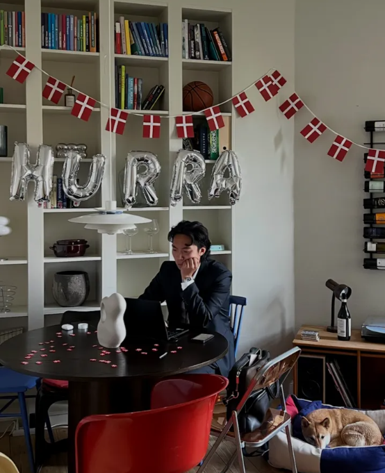

Senior Manager at Norlys working on AI and business transformation. I got here faster than I expected — honestly not totally sure how, but I work hard and I try to deserve every room I'm in. I write about what I learn. I'm also a curious mind and a thinker — I love to learn, whether it's the latest in AI technology or why softice is called softice. I also cook and play Padel.

I write about whatever is taking up space in my head. Usually it's work — and I have a lot to process. I'm 28, somehow managing high-stakes transformation programs at one of Denmark's largest companies, and most days I still wonder how I got here. Imposter syndrome is real. So is curiosity — lately I've been obsessing over why business adoption is now the hardest part of any transformation, even when technology gets delivered faster than ever. Sometimes it's a recipe I finally nailed. Sometimes it's a mental model I just discovered. No agenda. No newsletter. Just a guy writing to figure out what he thinks.
Who I am
My parents came to Denmark as boat refugees from Vietnam. They arrived with almost nothing. That's probably why I work hard and never take opportunities for granted — because I've seen what it looks like when you start from zero and build something real anyway.
I finished my Masters in early 2024, spent time at Strategy& consulting, and ended up at Norlys — Denmark's largest integrated energy and telecom company — first as a Manager, now as Senior Manager working on AI and business transformation. I'm 28. Things have moved fast.
I'm a person of integrity. I bring my heart to work and do what I believe is right, even when it's uncomfortable. I believe in people — genuinely — but I also believe everyone should take responsibility, work hard, and raise the bar. Including me.
Outside of work, life is beautifully chaotic right now. I just bought an apartment in Frederiksbjerg with my girlfriend Cecilie and our dog Aika. I have debt up to my throat and I've never been happier. We're renovating, figuring out adult life, and somehow still finding time to cook, play Padel, and go down random rabbit holes — like why dogs tilt their heads (looking at you, Aika), or how large language models actually work. That's just how I'm wired.